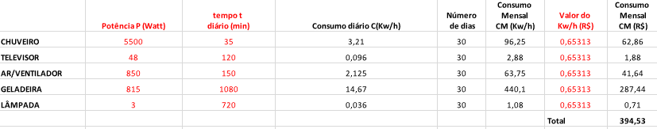

Quadro de consumo de energia feito pela matéria de matemática
Aqui o texto de português
Conforme o quadro, o chuveiro tem a potência de 5500w, ele é utilizado 35 minutos por dia por uma única pessoa. E em 30 dias o consumo é de 96,25Kw/h ou seja R$61.21.
Já o munitor tem potência de 48w, sendo utilizado 120 minutos por dia por uma única pessoa. Em 30 dias o consumo é de 2,88Kw/h tendo que pagar R$1,88
Quanto ao ar condicionado têm a potência de 850w e é utilizado por 150 minutos por quatro pessoas. E em 30 dias o consumo é de 63,75Kw/h o que equivale a R$41,63
Por último a lâmpada tem uma potência de 3w sendo utilizado por quatro pessoas no dia. Em 30 dias o consumo vai ser de 1,08Kw/h, que custa R$0,71.